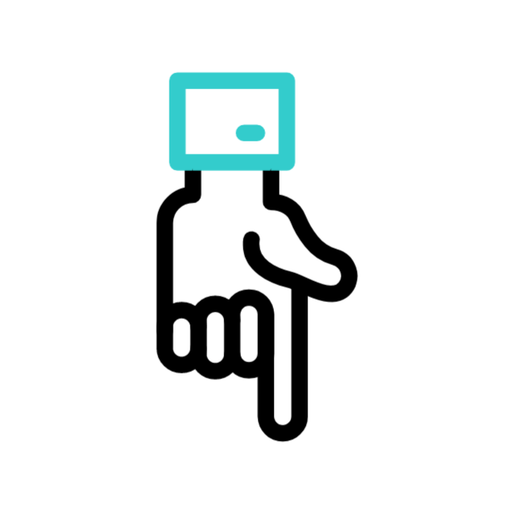

Привет! Меня зовут Бортникова Анна, и я рада приветствовать тебя на своей странице!
Привет! Меня зовут Бортникова Анна, и я рада приветствовать тебя на своей странице!
В данный момент я являюсь студенткой первого курса Лениногорского нефтяного техникума, где изучаю специальность «Информационные системы и программирование».
Образование для меня всегда было важным, и я горжусь тем, что окончила школу с отличием.
На данный момент я активно погружаюсь в мир информационных технологий, изучая различные языки программирования, основы разработки программного обеспечения и работу с информационными системами. Я стремлюсь развивать свои навыки и знания, чтобы в будущем внести свой вклад в эту динамичную и увлекательную сферу.
Кроме учебы, я интересуюсь новыми технологиями, участвую в различных проектах и мероприятиях, связанных с IT. На видео: Республиканский конкурс научно-исследовательских работ (проектов) "Новое поколение - 2024". Мне нравится делиться своими знаниями и общаться с единомышленниками, поэтому я открыта для общения.
Если у вас есть вопросы или вы хотите обсудить идеи, связанные с программированием или технологиями
